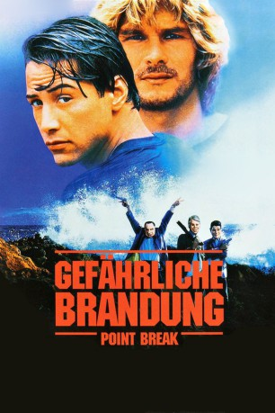

#1287 Gefährliche Brandung
Alternativ: Point Break
 
 IMDB-Wertung: 7.2 / 10
IMDB-Wertung: 7.2 / 10  Metascore: 58
Metascore: 58 
Eine Bande von Bankräubern terrorisiert die Stadt. Mit Plastikmasken als Ex-Präsidenten der USA verkleidet, schlagen sie immer wieder blitzschnell zu. Die Polizei ist vollkommen ratlos, bis der junge FBI-Agent Johnny Utah auf die Idee kommt, sich als Undercover-Agent in das Surfer-Milieu einzuschleichen. Dort trifft er nicht nur auf die junge, attraktive Tyler, sondern auch auf den charismatischen Surf-Guru Bodhi und seine Clique, mit der er sich schnell anfreundet. Bald stellt er aber fest, dass sie die Gangster sind, die auf der Suche nach immer neuen "Kicks" auch Banküberfälle wie einen Sport betreiben.
Jahr: 1991
Dauer: 122 Minuten
FSK: 16
Land: USA Studio: 20th Century FoxTonspuren: DD2.0 - ,
Untertitel:
Auflösung: 1080p (1920x816) Größe: 8048 MB
Genre: Action, Krimi, Thriller
Regisseur:  Kathryn Bigelow
Kathryn Bigelow
Drehbuch: Rick King, W. Peter Iliff, W. Peter Iliff
Soundtrack: Mark Isham
Darsteller:
 Patrick Swayze als Bodhi
Patrick Swayze als Bodhi Keanu Reeves als Johnny Utah
Keanu Reeves als Johnny Utah Gary Busey als Pappas
Gary Busey als Pappas Lori Petty als Tyler
Lori Petty als Tyler John C. McGinley als Ben Harp
John C. McGinley als Ben Harp James Le Gros als Roach
James Le Gros als Roach John Philbin als Nathanial
John Philbin als Nathanial Bojesse Christopher als Grommet
Bojesse Christopher als Grommet- Daniel Beer als Babbit
- Anthony Kiedis als Tone
 Lee Tergesen als Rosie
Lee Tergesen als Rosie- Sydney Walsh als Miss Deer
- Christopher Pettiet als 15
- Michael Kopelow als Passion for Slashin
 Julie Michaels als Freight Train
Julie Michaels als Freight Train Mike Genovese als Corey
Mike Genovese als Corey Jack Kehler als Halsey
Jack Kehler als Halsey- Raymond Forchion als Neighbor
- Betsy Lynn George als Girl at Party
- Gloria Mann als Fierce Woman
 Ping Wu als Dispatcher
Ping Wu als Dispatcher- John Apicella als Security Guard
- Richard Grove als Cullen
 Anthony Mangano als Off Duty Cop
Anthony Mangano als Off Duty Cop- Deborah Lemen als Miss Jennings
- Randy Walker als Combat Alley Supervisor
- Greg Anthony als Bank Teller , uncredited
- Mark Atienza als Stoned Surfer , uncredited
- Rich Hopkins als Surfer , uncredited
- Debra Lamb als Flame Blower at Party , uncredited
- K. Louise Middleton als Lady in bank , uncredited
 Tom Sizemore als DEA Agent Deets , uncredited
Tom Sizemore als DEA Agent Deets , uncredited- Julian Reyes als Alvarez
- Chris Pedersen als Bunker
- Vincent Klyn als Warchild
- Dave Olson als Archbold
- Dino Andino als Psycho-Stick
- Matt Archbold als Surf Rat
- Kimberly Martin als Fiberglass
- Galyn Görg als Margarita
- Shannon Brook als Fast Food Girl
- Jared Chandler als Pilot
- Mick Regan als Mr. Duggan
- Marsha L. Carter als FBI Receptionist
- Sedrick J. Azurdia als Fruit Vendor
- Peter Phelps als Australian Surfer
- Gary Roberts als Australian Cop #1
- Owen Rutledge als Australian Cop #2
- Bret Culpepper als Irate Driver , uncredited
 Jeff Imada als Store Clerk , uncredited
Jeff Imada als Store Clerk , uncredited
Datei: X:\1991\Gefährliche Brandung (1991, FSK16, 1920x816).mkv seit 16.06.2015
Festplatte: HD 1987-1991
 Es gibt insgesamt 53 Filme in der Gruppe '1991'
Es gibt insgesamt 53 Filme in der Gruppe '1991'